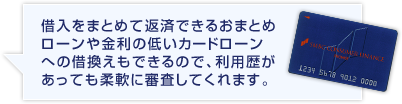
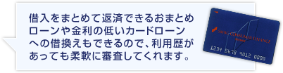
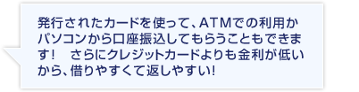
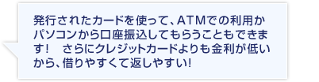
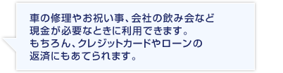
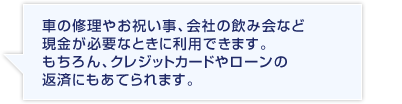
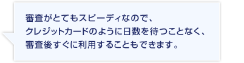
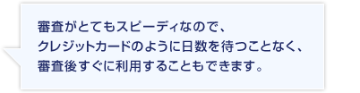

クレジットカードの申込に不安がある、審査に落ちてしまった経験があるなど、クレジットカードの申込をためらってしまう方が利用できるカード… それは「カードローン」です！
カードローンはクレジットカードのキャッシング機能のように使えるのに、
クレジットカードのキャッシングよりも金利が安く、利用可能枠も大きく設定されているのが特長です。
 即日発行なのに申込がしやすいワケ
即日発行なのに申込がしやすいワケ
カードローンはクレジットカードとは違い、借入がある方に向けたおまとめや借り換えの利用OKの商品です。だからカードの利用があっても、借入があっても大丈夫！そんな方にこそ申込・利用しやすいような審査体制を取っているんです。
そして、カードローンはひとつ使えるようにしておくと、とにかくいろんなことに使えて本当に便利です。
 
 
 
 
知っていますか。
実はクレジットカードのキャッシング枠は、2010年の6月より新規申込でのキャッシング枠50万円以上、その他の貸金業からの借入総額100万円以上の場合「収入証明書」が必要になっとことを。
なのでクレジットカードのキャッシングを時々利用している方が、
キャッシング機能の付いたクレジットカードに申込んだときには、収入証明書を求められることがあります。
しかもその手続きを知らせる電話や郵送物に対応している分、クレジットカードの発行は遅くなり、使いたかった日にカードを持っていない、なんてことも起きないことはないですよね。
でも【プロミス】なら、収入証明書なしで50万円まで利用可能です。
ひと手間のかかる手続きがないから【プロミス】も【モビット】もカードローンは申込後すぐにカード発行、即日利用ができるんです。カードローンのなかには、こっそりと借りたい方向けに電話連絡や郵送物なしで利用できる【モビット】のようなカードローンや収入証明書が必要でも利用可能額が大きい【オリックス銀行カードローン】のようなタイプもありますから、自分が使いやすそうだと思えるカードローンを利用しましょう。
クレジットカードのキャッシングは、ATMで引き出せて便利な機能ですが、カードローンも負けてはいません。カードローンはATMからの引出しはもちろん、パソコンや携帯、スマホから口座振込を指定して使うことだってできるのです。
それにクレジットカードのキャッシングと、カードローンの利用とでは、金利（利息）がかなり違ってきます。
 カードローン |
 クレジットカード |
|
|---|---|---|
| 審査 | カードやローンの利用、 借入があっても申し込めるから安心 |
申込・利用履歴が気になり申込に不安 |
| 利用開始日 | 即日 | 1週間から3週間後 |
| キャッシング 利用法 |
ATMや口座振込が選べる | ATMからキャッシング |
| 利用目的 | クレジットカードの返済に充てるなど | ショッピングや飲食 現金化はNG |
| キャッシング金利額※1 | 無料～1479円 | 1479円 |
| 利用限度枠 | ～最高800万円 | 10万円から50万円程度 ※審査により50万円以上も可能 |
クレジットカードのキャッシング金利は平均で15.0％から18.0％ですが、カードローンはキャッシングがメインとなるカードなので、金利が3.5％から17.8％の間になっています。
10万円を30日借りた場合、クレジットカードでは1499円（年利18.0％）の利息が発生しますが、
【プロミス】利用なら30日間無利息になるので利息が発生しません。カードローンにはクレジットカードにはない、無利息などのキャンペーンがあるのも魅力的です。
クレジットカードへ申込むとき、勤務先や勤務年数、年収などを気にしたことはありませんか。
クレジットカードのなかにはアルバイト、パート、派遣社員だと審査が厳しいイメージを受けるものもあれば、転職したばかり、審査に何度か落ちてしまっている状況にいる方もいるかと思います。
でもカードローンなら不安なく申し込めます！継続した収入があれば【プロミス】のカードローンようにアルバイトやパートの方でも申込ができるものもあります。
転職したばかりでも、収入金額に不安があっても、クレジットカードの審査に落ちたばかりでも、カード利用があっても、ローン利用があっても、毎月決まった収入があるならカードローンに申込OK！審査通過の対策を練ったり、我慢したりする必要はありません！
カードローンはクレジットカードよりも早く利用ができます！
 申込みから利用までの日数
申込みから利用までの日数
| ①申込み | このままWebから申し込めば、即日審査・即日利用が可能です！ |
|---|---|
| ②審査結果 | 審査は最短で30分！ 結果は電話やメールでもらえます。 |
| ③カード発行 | 即日希望であれば、窓口や契約機（専用ATM）でカードが受け取れます！ |